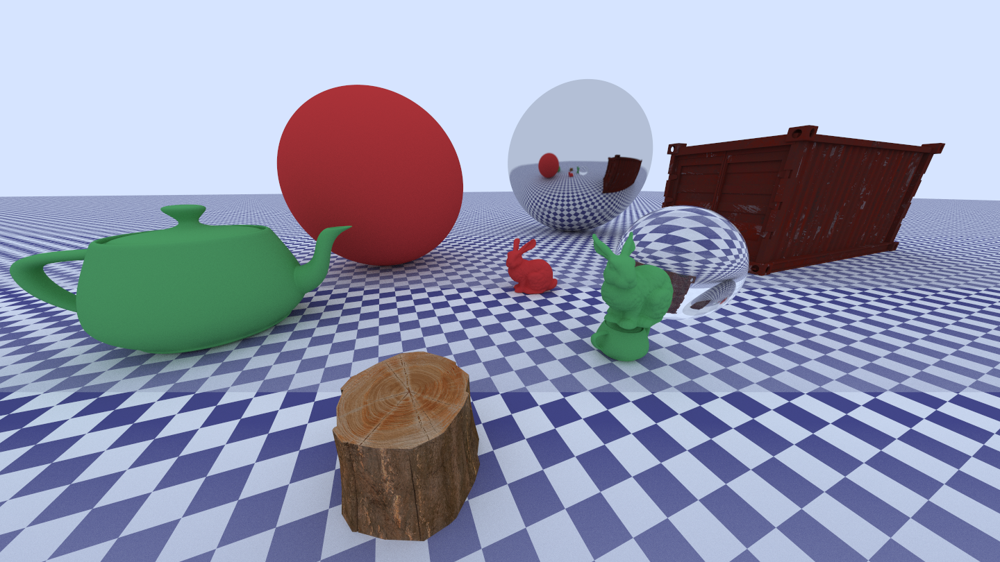
Overview
Raytracer developed by following the Ray Tracing in One Weekend series by Peter Shirley, with additional features implemented at every step. Raytracing is an offline rendering technique where mathematical rays originating from a simulated thin camera lens sends rays out into a 3D scene defined by mathematical serfaces. Ray-object intersections are then calculated for each primitive in the scene. Additional features are detailed as followed:
Tip: these explinations are a little long winded, feel free to scroll through quick and look at the pretty pictures :)
Monte Carlo Raytracing
Monte Carlo algorythms are algorythms that utilize accumulation of random chance to reach a value close to true calculation. Monte Carlo raytracing utilizes probabliity distribution functions otherwise known as "importance sampling" to adjust the random scattering of rays to tend towards important sources of detail in the scene, like light sources, reflective surfaces, and dielectric sources particularly those that generate caustic light effects.
This makes it so you get much better, more consistant results with less samples per pixel. It eliminates visual artifacts like particularly in dark scenes lit by lights within the scene itself. Here is a before and after of a render that doesn't use monte carlo raytracing and one that does.
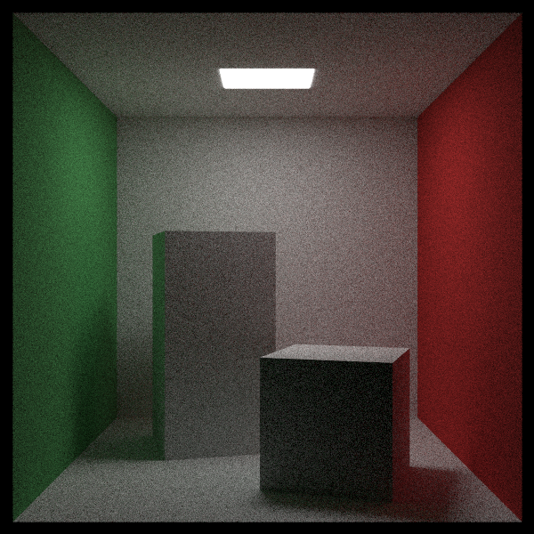
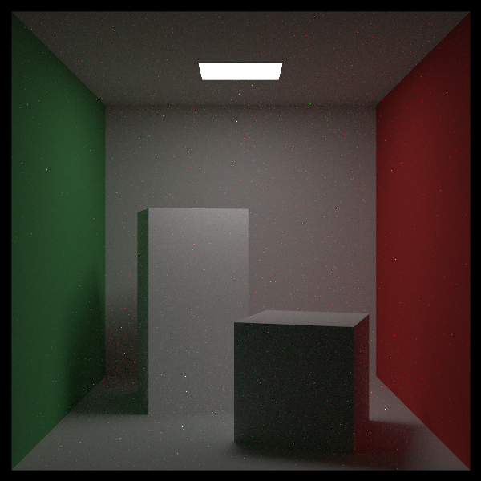
Multithreading
Multiple threads parralelize the rendering process, making the render much faster. Currently it just utilizes the multiple cores of the CPU for rendering but future GPU acceleration should be possible.
What to improve: Currently we are splitting the work up by rows of pixels. This includes a performance issue since rows that intersect more geometry are going to take longer to trace than rows that just are returning the background for example. A common approach to fixing this problem is to render tiles instead, with different sizes split up based on how dense the scene objects are layed out. In this approach dynamically smaller tiles are used on areas that contain more objects packed closer together, with large tiles used for areas of the image that take less time to complete. This would be a great future optimization to add.
Render Timer
A timer that tracks the progress of rendering accross multiple threads, and gives an accurate rendering time at the end.
Why? The raytracer is an offline rendering process that for more complex scenes or higher definition results take much longer to render. To ensure that frames are being processed, some feedback and a way to track the time it is spending rendering is great feedback to see that through changes you are making are functional and completing in a reasonable time.
Major challange: Paralelization makes this problem far more complicated. Since we are dividing the work between multiple CPU cores, we need a way to track progress accross multiple threads. The solution is called atomic variables, which are variables that can be accessed and written safely accross threads. By initializing an atomic variable as the number of rows we are rendering and incrementing down each one we complete, we can track the progress we are making accross every thread!
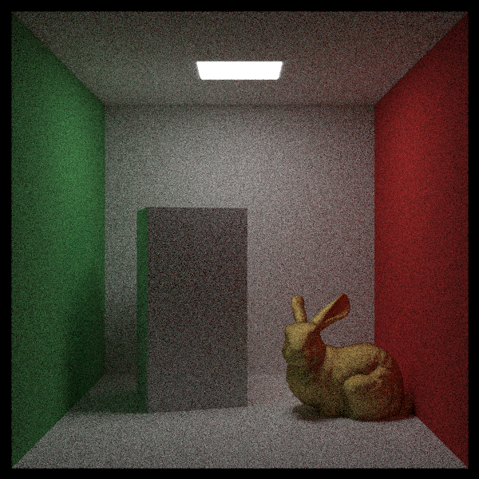
PNG output
Images created are put into the png format rather than ppm utilizing the stb_image_write.h header. The original tutorial creates images in the ppm format, but these files are larger and supported by fewer image viewing software. We create a buffer of RGB colors and send it to a lightweight opensource header to transform it into a png!
OBJ mesh and Triangle Rendering
Triangle primitives and OBJ loading using tinyOBJ loader. Texture coordinates, materials, and geometry transformations are all supported. All quads and polygon meshes are automatically triangulized by tinyOBJ loader.
Triangle-Ray intersections are complex, you need to first find if the ray intersects with the infinate plane the triangle lies on. If it does you continue and ask if the ray lies within the bounds of the spatailly defined triangle, if it does it can tell you exactly where on the triangle it collides!
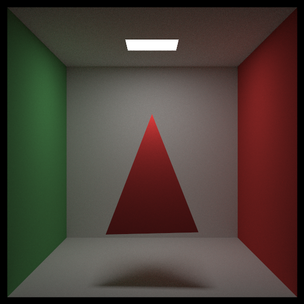
Problem: Meshes that use triangles, use a lot of them. The raytracer scales to need to check every ray against every object in a scene, this is a VERY expensive calculation you are preforming potentially millions or billions of times in a single render. The solution is what is called a BVH!
Bounding Volume Hierarchy (BVH)
BVH is a optimization data structure used in spatial computing. It essentially bounds geometry in the cube that bounds it, and then creates a binary tree based on where they are located in physical space. Instead of checking every ray against every object, we can check it against the tree and only query the objects that we are spatially intersecting. This creates a massive speedup in our render time!
Texture Mapping and Vertex Normal support
Texture coordinates are incorporated for every primitive, including spheres, quads, and triangles. This allows you to map a 2D image onto the 3D object, whichever primitive it is. Additionally I have added support for vertex normals which helps smooth out objects, as it interpolates the normal value read as the ray intersection moves between verteces for meshes.
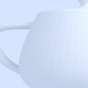
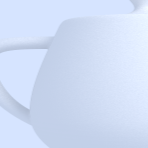
Atmospheric Perspective Camera effect
Atmospheric Perspective is the effect where as light travels into the distance, random particles in the air will scatter. This makes objects in the distance appear closer to the color of the sky, often shifted blue in color. This effect is achieved by checking a random number with a scene defined distance to scatter 50% of rays upon each ray cast, so the farther something is the larger the chance for a ray to scatter randomly and contribute a scattered color to the final pixel color attenuation.
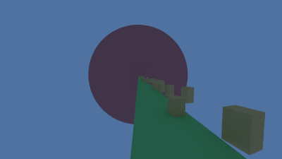
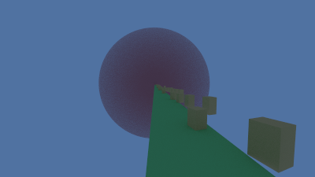
Some more renders
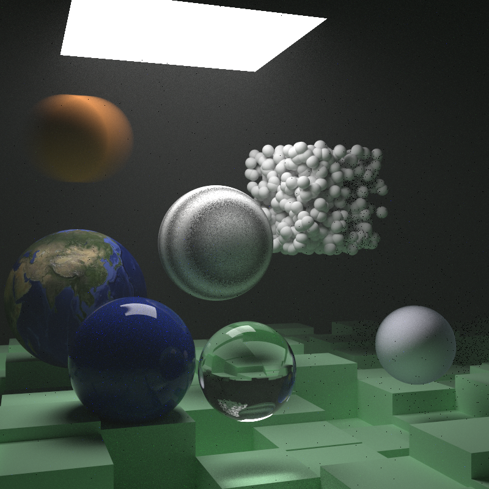
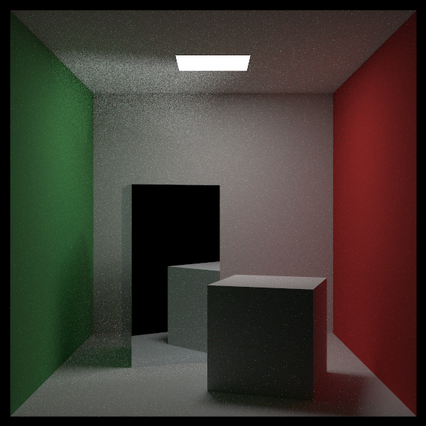
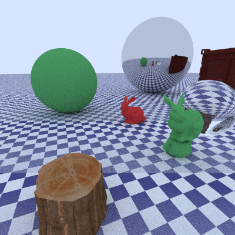
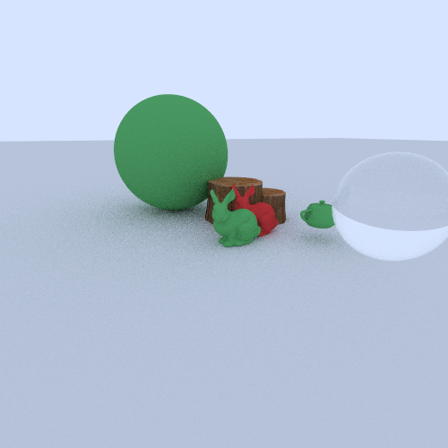
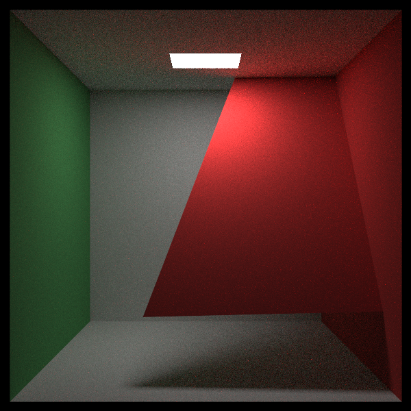
Future Work
Additional work to be implemented is a sequence renderer for animations & animation translation, a tilt shifted lens simuilated camera effect, smooth incorporation into a virtual development workflow, and more!
The major use case for offline rendering is movie vfx and prerendered cutscenes. Those that attempt to create images that closely mirror are reality utilize whats called PBR or Physically Based Rendering! I am currently working through the PBR textbook, (a computer science textbook so good it has an achademy award) and hope to work on introducing some of those concepts here in the future!